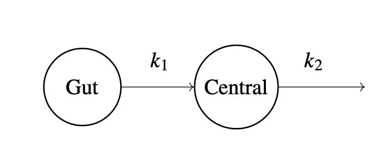
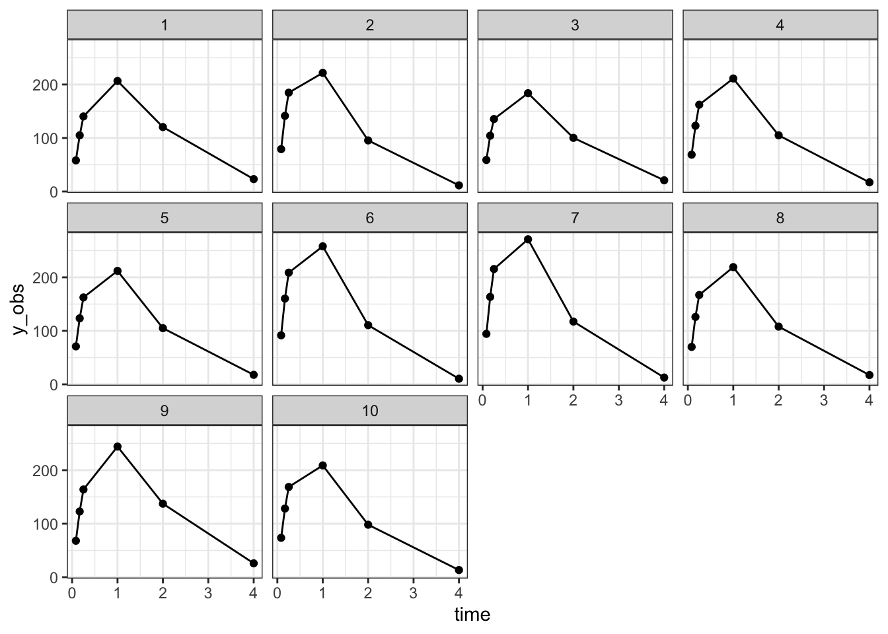
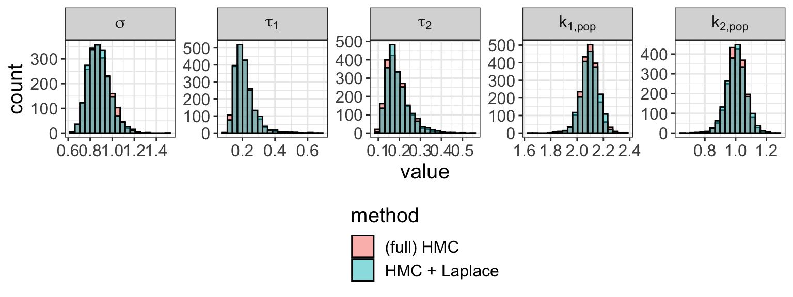

Approximate Bayesian inference for latent Gaussian models in Stan – two years later
Abstract
Latent Gaussian models are a common class of Bayesian hierarchical models, characterized by a normally distributed latent variable. The posterior distribution of such models often induces a geometry that frustrates sampling algorithms, such as Stan’s Hamiltonian Monte Carlo (HMC), resulting in an incomplete or slow exploration of the parameter space. To alleviate these difficulties, we can marginalize out the latent Gaussian variables and run HMC on a subset of the parameters. Unfortunately, exact marginalization is not possible in all but a few simple cases. It is however possible to do an approximate marginalization, using an integrated Laplace approximation. We introduce a prototype suite of Stan functions that support this approximation scheme, and demonstrate the method on several models. This notebook, written two years after the original StanCon publication, presents several improvements made to the prototype integrated Laplace approximation, notably a more flexible API which allows us to tackle a broader range of models.\[ \text{DRAFT} \]
Introduction
Latent Gaussian models are a class of hierarchical models defined by the following data generating process, \[\begin{equation} \begin{split} \phi, \eta & \sim \pi(\phi, \eta), \\ \theta & \sim \mathrm{Normal}(0, K(\phi)), \\ y & \sim \pi(y \mid \theta, \eta), \end{split} \tag{1} \end{equation}\] with
- \(y\): the observations,
- \(\theta\): the latent Gaussian variable,
- \(\phi\): hyperparameters for the prior covariance matirx, \(K\),
- \(\eta\): hyperparameters for the likelihood.
Typically, single observations \(y_i\) are independently distributed and only depend on a linear combination of the latent variables, that is \(\pi(y_i \mid \theta, \phi) = \pi(y_i \mid a^T_i \theta , \phi)\) for some appropriate vector \(a\). In many applications, \(\theta_j\) denotes a group parameter that informs the distribution of observations in group \(j\). Latent Gaussian models find a broad range of applications; and because of their normal prior are subject to convenient mathematical manipulations that can improve Bayesian inference.
Markov chains Monte Carlo (MCMC) sampling can struggle with the geometry induced by latent Gaussian models, for instance when dealing with funnel shapes, and more generally high curvature densities (Neal 2003; Betancourt and Girolami 2015). Much of the geometric grief we experience comes from the interaction between \(\phi\) and \(\theta\).
An alternative approach to MCMC is to integrate out \(\theta\) and compute the marginal likelihood, \[ \pi(y \mid \phi, \eta) = \int \mathrm \pi(y \mid \theta, \phi, \eta) d \theta, \] and then perform standard inference on \(\phi\) and \(\eta\). If the likelihood, \(\pi(y \mid \theta, \eta)\), is non-Gaussian, exact marginalization is not possible. Instead, we can use an integrated Laplace approximation, and compute an approximate marginal distribution, \(\pi_\mathcal{G}(y \mid \phi, \eta)\). This is the driving principle behind the packages INLA (Rue, Martino, and Chopin 2009; Rue et al. 2017), GPStuff (Vanhatalo et al. 2013), and TMB (Kristensen et al. 2016). We now incorporate these ideas in Stan, notably building on the algorithmic work by Rasmussen and Williams (2006).
Why Stan? To perform inference on \(\phi\) and \(\eta\), we want to use Stan’s dynamic HMC, as opposed to more standard techniques, such as numeric quadrature. This allows us to tackle the case where \(\phi\) and \(\eta\) are high-dimensional and have a non-unimodal posterior distribution.
Embedding the Laplace approximation inside Stan’s architecture presents several technical challenges. Anecdotally, our first implementation of the Laplace approximation took \(\sim\) 2,000 seconds to evaluate and differentiate the approximate log marginal density (for a certain test problem). The current implementation performs the same task in \(\sim\) 0.1 second. The main technical innovation of our implementation is an adjoint-differentiation method, which can handle any covariance matrix, \(K\), and scales when \(\phi\) is high-dimensional (Margossian et al. 2020). The later developed general adjoint-differentiated Laplace approximation allows us to handle user-specified likelihoods, \(\pi(y \mid \theta, \eta)\) (Margossian 2022, Chapter 5). A particular challenge when using the integrated Laplace approximation is the requirement for higher-order derivatives of the likelihood. We will detail the constraints this puts on which likelihood we can use, as well as techniques to make differentiation efficient.
Disclaimer: The suite of functions presented in this notebook is a prototype. While we are confident in the use of the integrated Laplace approximation for conventional latent Gaussian models, we built a flexible API which allows users to tackle unorthodox models. These cases will stress-test our algorithms and motivate improvements. Readers should not lose sight of the research and experimental nature of this project.
Installation
The functions we use in this notebook are prototypes
and currently not part of Stan’s release version.
In order to use them, we install a version of cmdstan which contains the relevant prototypes.
See the instructions in the following GitHub repository:
https://github.com/SteveBronder/laplace_testingThe code used in this notebook, including all the models, can be found on
https://github.com/charlesm93/StanCon2020/under the directory notebook2022.
Changes since the 2020 notebook
- The notebook begins with an example where exact marginalization is possible.
- The prior covariance function no longer needs to follow a strict signature and the Laplace routines now admit variadic arguments.
- Users can specify their own likelihood rather than choose from a menu of preset options.
- The notebook contains several new examples demonstrating how to write a custom likelihood.
R setup
# Adjust to your setting!
set.seed(1954)
.libPaths("~/Rlib")
library(cmdstanr)
library(ggplot2)
library(latex2exp)
library(rjson)
library(RJSONIO)
# Set the path to the cmdstan directory with the prototype functions
set_cmdstan_path("~/Code/laplace_approximation/spring2022/laplace_testing/cmdstan/")
# tuning parameters for MCMC
num_chains <- 4
num_warm <- 500
num_post <- 500Gaussian variables (hiding in the wild)
To begin, let us examine two examples of a latent Gaussian model.
Example 1: sparse linear regression
Consider the following linear regression model \[\begin{eqnarray*} \phi & \sim & \pi(\phi), \\ \beta & \sim & \mathrm{Normal}(0, \Sigma(\phi)) \\ y & \sim & \pi(y \mid X \beta), \end{eqnarray*}\] where \(X\) is a design matrix and \(\beta\) the regression coefficients. The prior on \(\beta\) may, for example, be a sparsity inducing prior. The above data generating process has a latent Gaussian model structure. Observe that each observation \(y_i\) depends on a linear combination of the latent variables, \(\sum_j x_{ij} \beta_j\).
We can reformulate this model by introducing another latent Gaussian variable, \(\theta = X \beta\). Now, \(y_i\) only depends on \(\theta_i\), and the model is \[\begin{eqnarray*} \phi & \sim & \pi(\phi), \\ \theta & \sim & \mathrm{Normal}(0, X \Sigma(\phi) X^T), \\ y & \sim & \pi(y \mid \theta). \end{eqnarray*}\] Both formulations are of interest. The first one is more natural, and emphasizes \(\beta\), presumably a variable of interest. The benefit of the second formulation is mostly technical: the Hessian of the likelihood \(\pi(y \mid \theta)\), with respect to \(\theta\) is diagonal and therefore allows us to do sparse linear algebra.
Example 2: Gaussian process
The \(\theta\)’s in equation (1) can be the realizations of a Gaussian process – a non-parametric function –, which then inform the observational distribution of \(y\). For an introduction to the subject in Stan, see (???) and (???). Quite remarkably, to model a Gaussian process, it suffices to study a finite number of realizations, which follow a normal distribution \[ \theta \sim \mathrm{Normal}(0, K(\phi)). \] Roughly speaking, the covariance, \(K\), controls how quickly and how much the Gaussian process varies. A classic example for \(K\) is the squared exponential kernel, with \((i, j)^\mathrm{th}\) element defined as \[ K_{ij} = \alpha^2 \exp \left ( - \frac{||x_i - x_j||^2}{\rho^2} \right ) \] where \(x_i\) designates the coordinate of observation \(y_i\). In certain applications, \(K\) takes a much less trivial form, e.g. (Agrawal et al. 2019). The hyperparameter, \(\phi\), in this example comprises \(\alpha\) and \(\rho\), for which we can construct appropriate priors.
Typically, \(\pi(y_i \mid \theta, \eta) = \pi(y_i \mid \theta_i, \eta)\), meaning that for each observation, the model includes a latent variable. There is no formal constraint on the likelihood. Some examples:
- \(\pi(y_i \mid \theta_i, \eta) = \mathrm{Normal}(\theta_i, \sigma^2)\) and \(\eta = \sigma\).
- \(\pi(y_i \mid \theta_i, \eta) = \mathrm{Poisson} \left ( \exp \theta_i \right)\) and \(\eta = \emptyset\)
- \(\pi(y_i \mid \theta_i, \eta) = \mathrm{NegBinomial} \left (\exp \theta_i, \eta \right)\), where \(\eta\) is the overdispersion parameter.
- \(\pi(y_i \mid \theta_i, \eta) = \mathrm{Bernoulli} ( \mathrm{logit} \theta_i)\) and \(\eta = \emptyset\)
Tools for Bayesian inference
Our goal is to characterize the posterior distribution \[ \pi(\theta, \phi, \eta \mid y). \] A tool of choice is Markov chains Monte Carlo (MCMC), and in particular the dynamic Hamiltonian Monte Carlo (HMC) sampler provided by Stan (Betancourt 2018; Hoffman and Gelman 2014).
MCMC has been widely successful in this setting but there are nevertheless known challenges when fitting multilevel models. The interaction between \(\phi\) and \(\theta\) can indeed create complicated geometries, such as funnel shapes. When the Markov chain cannot overcome these geometric pathologies, we observe divergent transitions, indicating our inference may be bias. We can often bypass these issues by reparameterizing the model and fine-tuning HMC. But this process can be cumbersome, especially when working on computationally intensive models. Finding an acceptable parameterization and properly tuning HMC usually requires multiple fits, and the burden is that much more important when each fit takes several hours. One example is the prostate cancer classification model discussed by (Piironen and Vehtari 2017) and (Margossian et al. 2020).
Given how much of our geometric grief comes from the interaction between \(\theta\) and \(\phi\), it stands to reason that we may alleviate these issues by marginalizing out \(\theta\) and only handling the marginal posterior distribution \[\begin{eqnarray*} \pi(\phi, \eta \mid y) & \propto & \pi(\phi, \eta) \pi(y \mid \phi, \eta) \\ & \propto & \pi(\phi, \eta) \int \pi(y \mid \theta, \phi, \eta) \mathrm d \theta \end{eqnarray*}\] We can then run MCMC, or any other inference methods, on \(\phi\) and \(\eta\). It is furthermore possible to recover samples for \(\theta\), if we can construct the conditional distribution \[ \pi(\theta \mid \phi,\eta, y). \]
Unfortunately, in all but a few simple cases we cannot calculate \(\pi(\phi \mid y)\) and \(\pi(\theta \mid \phi, y)\). However, exploiting the fact \(\theta\) has a normal prior, we can approximate these distributions using a Laplace approximation.
Exact Marginalization
To illustrate our inference strategy, we begin with an example where the relevant conditional distributions are available analytically, namely the 8 schools model.
The full model is
\[\begin{eqnarray*}
\tau, \mu & \sim & \pi(\tau) \pi(\mu), \\
\theta_1, \cdots, \theta_n & \sim & \text{Normal}(\mu, \tau), \\
y_i & \sim & \text{Normal}(\theta_i, \sigma_i),
\end{eqnarray*}\]
where \(y_i\) and \(\sigma_i\) are observed.
Rather than run MCMC on the full space, we marginalize out \(\theta\) and run MCMC on a reduced space and sample from \(\pi(\mu, \tau \mid y, \sigma)\).
Now some elementary integration yields
\[\begin{equation*}
\pi(y_i \mid \tau, \mu, \sigma) = \text{Normal}\left(\mu, \sqrt{\tau^2 + \sigma^2_i}\right).
\end{equation*}\]
We then recover in generated quantities the posterior samples for the \(\theta\) by sampling from the conditional distribution
\[\begin{equation*}
\pi(\theta_i \mid y_i, \tau, \mu, \sigma) = \text{Normal} \left (\hat \theta_i, \hat \sigma_i \right),
\end{equation*}\]
where
\[\begin{equation*}
\hat \sigma_i^2 = \left ( \frac{1}{\tau^2} + \frac{1}{\sigma^2_i} \right)^{-1},
\end{equation*}\]
and
\[\begin{equation*}
\hat \theta_i = \left (\frac{\mu}{\tau^2} + \frac{y_i}{\sigma^2_i} \right) \hat \sigma_i^2.
\end{equation*}\]
This last result is obtained via an argument of conjugacy.
Samples from \(\pi(\theta, \eta, \phi \mid y, \sigma)\) are obtained using both the model and the generated quantities blocks.
model {
mu ~ normal(5, 3);
tau ~ normal(0, 10);
y ~ normal(mu, sqrt(square(tau) + square(sigma))); // p(y | mu, tau)
}
generated quantities {
real theta[n_schools];
for (i in 1:n_schools) {
real conjugate_variance = 1 / (1 / square(sigma[i]) + 1 / square(tau));
real conjugate_mean =
(y[i] / square(sigma[i]) + mu / square(tau)) * conjugate_variance;
theta[i] = normal_rng(conjugate_mean, sqrt(conjugate_variance));
} // p(theta | y, mu, tau)
}The full model is written in schools_marginal.stan.
n_schools <- 8
y <- c(28, 8, -3, 7, -1, 1, 18, 12)
sigma <- c(15, 10, 16, 11, 9, 11, 10, 18)
stan_data <- list(n_schools = n_schools,
y = y,
sigma = sigma)
# fit model with HMC + marginalization
mod_marginal <- cmdstan_model("model/schools_marginal.stan")
fit_marginal <- mod_marginal$sample(data = stan_data,
chains = num_chains,
parallel_chains = num_chains,
iter_warmup = num_warm,
iter_sampling = num_post,
seed = 123, refresh = 0)## Running MCMC with 4 parallel chains...
##
## Chain 1 finished in 0.0 seconds.
## Chain 2 finished in 0.0 seconds.
## Chain 3 finished in 0.0 seconds.
## Chain 4 finished in 0.0 seconds.
##
## All 4 chains finished successfully.
## Mean chain execution time: 0.0 seconds.
## Total execution time: 0.3 seconds.What have we gain from doing this? The main benefit is that MCMC now only explores the parameter space of \(\phi\), which is geometrically better behaved. In some instances, \(\mathrm{dim}(\phi) \ll \mathrm{dim}(\theta)\), and the Monte Carlo problem becomes low dimensional, which can lead to an important speed up. Note that, when fitting this model, the computation is dominated by evaluation and differentiation of \(\log \pi(y \mid \phi) + \log \pi(\phi)\), which takes place several times per iteration. The sampling of \(\theta\), which requires no differentiation and only occurs once per iteration, is by comparison relatively cheap.
As a benchmark we run HMC on the joint parameter space \((\mu, \tau, \theta)\). To obtain accurate inference, we need to use a non-centered parameterization, thereby removing the offending geometry induced by the interaction between \(\theta\) and \(\phi = (\mu, \tau)\). \[\begin{eqnarray*} \tau, \mu & \sim & \pi(\tau) \pi(\mu), \\ \zeta_1, \cdots, \zeta_n & \sim & \text{Normal}(0, 1), \\ \theta_i & = & \zeta_i \tau + \mu, \\ y_i & \sim & \text{Normal}(\theta_i, \sigma_i). \end{eqnarray*}\] The sampler is run over the joint space \((\tau, \mu, \zeta)\) and the \(\theta\)’s are recovered post-hoc. While the non-centered parameterization solves many problems encountered when fitting hierarchical models, it can be difficult to know without trial-and-error which parameterization to use. The problem is further complicated when we consider the possibility that different \(\theta\)’s may require different parameterization.
mod_non_centered <- cmdstan_model("model/schools_non_centered.stan")
fit_non_centered <- mod_non_centered$sample(data = stan_data,
chains = num_chains,
parallel_chains = num_chains,
iter_warmup = num_warm,
iter_sampling = num_post,
seed = 123, refresh = 0)## Running MCMC with 4 parallel chains...
##
## Chain 1 finished in 0.0 seconds.
## Chain 2 finished in 0.0 seconds.
## Chain 3 finished in 0.0 seconds.
## Chain 4 finished in 0.0 seconds.
##
## All 4 chains finished successfully.
## Mean chain execution time: 0.0 seconds.
## Total execution time: 0.2 seconds.As a sanity check, we compare the output of both samplint strategies.
# Let's compare the outputs.
n <- num_chains * num_post
draws_full <- fit_non_centered$draws()
draws_marginal <- fit_marginal$draws()
n_parm <- 4
mu <- c(c(draws_marginal[, , 2]), c(draws_full[, , 2]))
tau <- c(c(draws_marginal[, , 3]), c(draws_full[, , 3]))
theta1 <- c(c(draws_marginal[, , 4]), c(draws_full[, , 12]))
theta2 <- c(c(draws_marginal[, , 5]), c(draws_full[, , 13]))
sample <- c(mu, tau, theta1, theta2)
method <- rep(rep(c("HMC + Marg.", "(full) HMC"), each = n), n_parm)
parameter <- rep(c("mu", "tau", "theta1", "theta2"), each = 2 * n)
post_data <- data.frame(sample, method, parameter)
plot_samples <- ggplot(data = post_data) +
geom_histogram(aes(x = sample, fill = method),
alpha = 0.5, color = "black",
bins = 20, position = "identity") +
facet_wrap(~parameter, nrow = 1, scale = "free") +
theme_bw()
plot_samplesApproximate marginalization
Suppose now that the likelihood is not normal. For example it may be a Poisson log, meaning \[\begin{equation} \pi(y_i \mid \theta, \phi) = \mathrm{Poisson}(\exp \theta_i). \end{equation}\] We no longer have an analytical expression for \(\pi(y \mid \phi, \eta)\) and \(\pi(\theta \mid \phi, \eta, y)\). We can however approximate both using the Laplace approximation \[ \pi_\mathcal{G}(\theta \mid \phi, \eta, y) \approx \pi(\theta \mid \phi, \eta, y). \] The density on the left-hand side is a normal density that matches the mode, \(\theta^*\), and the curvature of the density of \(\pi(\theta \mid \phi, \eta, y)\) evaluated at \(\theta = \theta^*\). We numerically determine the mode using a Newton solver; the curvature itself is the negative Hessian of the log density. We then have \[ \pi_\mathcal{G}(\phi, \eta \mid y) := \pi(\phi, \eta) \frac{\pi(\theta^* \mid \phi) \pi(y \mid \theta^*, \eta)}{\pi_\mathcal{G}(\theta^* \mid \phi, \eta, y)} \approx \pi(\phi, \eta \mid y). \] Equipped with this approximation, we can repeat the previously described sampling scheme.
But we now need to worry about the error this approximation introduces. When the likelihood is log-concave, \(\pi(\theta \mid \phi, \eta, y)\) is guaranteed to be unimodal. Some common densities that are log-concave include the normal, Poisson, binomial, and negative binomial densities, and in those instances the approximation is found to be very accurate. The Bernoulli distribution also observes log-concavity but it is understood that the approximation introduces a bias. Detailed analysis of the error can be found in references (e.g. Kuss and Rasmussen (2005), Vanhatalo, Pietiläinen, and Vehtari (2010), Cseke and Heskes (2011), Vehtari et al. (2016)). Evaluating the accuracy of the approximation for less traditional likelihoods constitutes a challenging and important avenue for future research.
Prototype Stan code
To enable the above scheme, we propose new routines in Stan to evaluate \(\log \pi_\mathcal{G}(y \mid \phi, \eta)\) and its gradient, and draw samples from \(\pi_\mathcal{G}(\theta \mid \phi, \eta, y)\).
These routines take the following general form:
laplace_marginal_*, which returns \(\log \pi_\mathcal{G}(y \mid \phi, \eta)\). Here*is the name of the desired likelihood, chosen from a menu of options, followed bylpmffor discrete observations andlpdffor continuous ones. If the user specifies their own likelihood, they may calllaplace_marginal_lpmforlaplace_marginal_lpdf.laplace_*_rng, which samples \(\theta\) from \(\pi_\mathcal{G}(\theta \mid \phi, \eta, y)\).
A use of the first function in the model block may look as follows
target += laplace_marginal_*(y | n, K, phi, eta, ...);The arguments include:
y,n: observations passed as sufficient statistics for the latent Gaussian variable \(\theta\).K: a function defined in thefunctionsblock which returns the covariance matrix and takes in the arguments passed aftereta, indicated above by.... In other words, the Laplace routines admit variadic arguments.theta_0: the initial guess for the Newton solver used to compute the Laplace approximation. It is common practice to settheta_0to a vector of 0’s.
The laplace_*_rng functions take in the same arguments and returns a vector.
We plan to develop the Laplace routines for a set of common likelihoods. Currently the options are the Poisson with a log link and the Bernoulli with a logit link. It is also possible for users to specify their own likelihood.
Poisson with a log link
The function
laplace_marginal_poisson_log_lpmf(y | n_samples, theta_0, K_functor,
...);returns \(\log \pi_\mathcal{G}(y \mid \phi)\) in the case where the likelihood is a Poisson distribution with a log link. In this case \(\eta = \emptyset\). The arguments unique to this function are:
int[] y: \(\sum_{i \in g(i)} y_i\), the sum of counts in the group parameterized by \(\theta_i\).int[] n: \(\sum_{i \in g(i)} 1\), the number elements in a group parameterized by \(\theta _i\).
\(\phi\) and any other input for the covariance function can be passed after the K_functor argument.
The only restriction on the signature of K_functor is that it must return a matrix.
The similar laplace_marginal_poisson_2_log_lpmf admits an additional argument
laplace_marginal_poisson_2_log_lpmf(y | n_samples, ye, theta_0, K_functor,
...);with
vector ye: (data) the offset for the mean.
That is the likelihood is \[ y_i \sim \text{Poisson}(y_{e,i} \exp(\theta_i)). \]
Bernoulli with a logit link
The function
laplace_marginal_bernoulli_logit_lpmf(y | n_samples, theta_0, K_functor,
...);returns \(\log \pi_\mathcal{G}(y \mid \phi)\) in the case where the likelihood is a Poisson distribution with a log link. Once again \(\eta = \emptyset\). The arguments unique to this function are:
int[] y: \(\sum_{i \in g(i)} y_i\), the sum of successes in the group parameterized by \(\theta_i\).int[] n: \(\sum_{i \in g(i)} 1\), the number elements in a group parameterized by \(\theta _i\).
User defined likelihood
The function
laplace_marginal_lpdf(y | L_functor, eta, y_int,
theta_0,
K_functor, ...)allows users to specify their own likelihood via a function defined in the functions block
real L_functor(vector theta, // latent Gaussian variable
vector eta, // hyperparameters for the likelihood
vector y, // continuous data
int[] y_int) { // interger data
...
}Unlike K_functor, L_functor must observe a strict signature.
This is because only one function passed to laplace_marginal_lpdf can admit variadic arguments.
The development of a more elegant solution is work in progress.
WARNING: Under the hood, laplace_marginal_lpdf evaluates higher-order derivatives of L_functor. This means any operation inside L_functor must support both forward and reverse mode automatic differentiation. While this is the case for most operations in Stan, some functions only support reverse mode automatic differentiation.
This notably true for functions which return the solution to algebraic equations, differential equations, or the marginal likelihood of Hidden Markov models.
The parser does not check whether the operations in L_functor support forward and reverse mode automatic differentiation.
You will however get a C++ error message when you run the model.
Another option is to call
laplace_marginal_lpmf(y_int | L_functor, eta, y_int,
theta_0,
K_functor, ...)Note that if you use the lpmf suffix, the first argument is the integer data.
It is also possible to specify several control parameters, for example,
laplace_marginal_tol_lpdf(y | L_functor, eta, y_int,
tolerance, max_num_steps,
hessian_block_size,
solver, max_steps_line_search,
theta_0, K_functor,
...);with:
real tolerance: the convergence criterion for the Newton solver, defined as the change in the objective function, \(\Psi(\theta) \propto \log \pi(\theta \mid y, \phi, \eta)\), between two iterations. (default value 1e-6).int max_num_steps: the maximum number of steps after which the Newton solver gives up and returns a warning message.int hessian_block_size: without loss of generality, we assume the Hessian, \(\partial^2_\theta \log \pi(y \mid \theta, \eta)\), is block-diagonal. If the Hessian is diagonal, usehessian_block_size = 0(default value). Using 1 would work too but under the hood, the diagonal case allows for some faster operations. If the Hessian is dense, usehessian_block_size = nwherenis the length of \(\theta\). Exploiting the sparsity of the Hessian is often required to achieve fast computation. You may consider constructing \(\theta\) in a way that makes the Hessian sparse.int solver: the type of Newton solver being used.solver = 1should be used when the likelihood is log-concave, i.e. the Hessian \(\partial_\theta \pi(y \mid \theta, \eta)\) is negative-definite. If the likelihood is not long-concave, it is recommended to usesolver = 2orsolver = 3. See (Margossian 2022, Chapter 5) for more details.int max_steps_line_search: enables a linesearch method at each iteration of the Newton solver. Ifmax_steps_line_search = 0, no linesearch is performed.
Note that the change in the name of the function, with tol appearing after marginal_.
Disease map of Finland
The disease map of Finland by Vanhatalo, Pietiläinen, and Vehtari (2010) models the mortality count due to alcoholism across the country. The data is aggregated into \(n = 911\) counties. For computational convenience, we use \(n_\mathrm{obs} = 100\) randomly sampled counties. As data we have \(x\), the spatial coordinate of each county, \(y\), the count of deaths and \(y_e\), the standardized expected number of deaths.
Building the model
We start with the data block:
data {
int n_obs; // number of counties
int n_coordinates; // number of spatial dimension
int y[n_obs]; // death counts in each county
vector[n_obs] ye; // standardized expected number of deaths
array[n_obs] vector[n_coordinates] x; // coordinates for each county.
}The disease is modeled using a Gaussian process and for each county we assign a latent realization of the process, \(\theta_i\). The likelihood is log Poisson, with an adjustment to the mean, \[ \pi(y_i \mid \theta) = \mathrm{Poisson} \left (y^i_e e^{\theta_i} \right). \] The Gaussian process itself is governed by a squared exponential kernel, with two hyper parameters: \(\alpha\) and \(\rho\). Our plan is to marginalize \(\theta\) out, so we only sample \(\alpha\) and \(\rho\) with HMC.
parameters {
real<lower = 0> alpha;
real<lower = 0> rho;
}In the model block, we specify our priors on \(\alpha\) and \(\rho\), which will be inverse-Gamma, and we increment the target density with the approximate marginal density, \(\log \pi_\mathcal{G}(y \mid \alpha, \rho)\).
model {
rho ~ inv_gamma(rho_location_prior, rho_scale_prior);
alpha ~ inv_gamma(alpha_location_prior, alpha_scale_prior);
target += laplace_marginal_poisson_2_log_lpmf(y | n_samples, ye, theta_0, K_functor,
x, n_obs, alpha, rho);
}We now need to fill in some gaps. The location and scale parameters for the priors
on \(\rho\) and \(\alpha\) can be passed as data.
K is specified in the functions block.
functions {
matrix K_functor (vector[] x, int n_obs, real alpha, real rho) {
matrix[n_obs, n_obs] K = cov_exp_quad(x, alpha, rho);
for (i in 1:n_obs) K[i, i] += 1e-8;
return K;
}
}In the transformed data block, we specify the remaining arguments of laplace_marginal_log_poisson.
transformed data {
vector[n_obs] theta_0 = rep_vector(0, n_obs); // initial guess
int n_samples[n_obs] = rep_array(1, n_obs); // observations per counties
}Finally, we generate posterior samples for \(\theta\) post-hoc.
generated quantities {
vector[n_obs] theta
= laplace_marginal_poisson_2_log_rng(y, n_samples, ye, theta_0, K_functor,
forward_as_tuple(x, n_obs),
forward_as_tuple(x, n_obs),
alpha, rho);
}The full Stan model can be found in model/disease_map_ela.stan.
Fitting the model in R
# Read in data for 100 randomly sampled counties
data <- rjson::fromJSON(file = "data/disease_100.json")
# Compile and fit the model with CmdStanR
mod <- cmdstan_model("model/disease_map_ela.stan")
num_chains <- 4
fit <- mod$sample(data = data, chains = num_chains, parallel_chains = num_chains,
iter_warmup = 500, iter_sampling = 500, seed = 123, refresh = 0)## Running MCMC with 4 parallel chains...
##
## Chain 3 finished in 7.4 seconds.
## Chain 1 finished in 7.6 seconds.
## Chain 2 finished in 7.8 seconds.
## Chain 4 finished in 7.9 seconds.
##
## All 4 chains finished successfully.
## Mean chain execution time: 7.7 seconds.
## Total execution time: 8.0 seconds.There are no warning messages. Let’s examine a summary of our fit for certain parameters of interest.
## # A tibble: 5 × 10
## variable mean median sd mad q5 q95 rhat ess_bulk
## <chr> <dbl> <dbl> <dbl> <dbl> <dbl> <dbl> <dbl> <dbl>
## 1 lp__ -346. -346. 1.09 0.857 -348. -345. 1.00 788.
## 2 alpha 0.712 0.685 0.202 0.186 0.449 1.09 1.01 794.
## 3 rho 19.6 17.3 9.64 5.85 10.0 38.1 1.00 884.
## 4 theta[1] -0.0913 -0.0908 0.0244 0.0238 -0.131 -0.0519 1.00 1730.
## 5 theta[2] 0.221 0.219 0.0786 0.0757 0.0881 0.349 1.00 1947.
## # … with 1 more variable: ess_tail <dbl>For the examined parameters, \(\hat R < 1.01\), and the effective sample sizes
(ess_bulk and ess_tail) are large.
We may do further checks, such as examine the trace and density plots.
It is well known that the Laplace approximation is very accurate when using a Poisson likelihood with log link.
In a previous study, we compare inference for the present model using an integrated Laplace approximation and doing full HMC,
and find the approximation error is negligible next tot he Monte Carlo error (Margossian et al. 2020).
For the full HMC benchmark, we use a non-centered parameterization and set adapt_delta = 0.95.
There are several ways to inspect the fitted model and for a more detailed analysis, we refer the reader to Vanhatalo, Pietiläinen, and Vehtari (2010). In this notebook, we simply plot the mean Poisson log parameter, \(\theta\), for each county.
theta_mean <- fit$summary()[6:105, 2]$mean
x_mat <- t(matrix(unlist(data$x), nrow = 2))
plot_data <- data.frame(x1 = x_mat[, 1],
x2 = x_mat[, 2],
theta_mean = theta_mean)
plot <- ggplot(data = plot_data,
aes(x = x1, y = x2, color = theta_mean)) +
geom_point() + theme_bw() +
scale_color_gradient2(low = "black", mid = "blue", high = "red")
plot
This plot highlights regions which, per our analysis, are more at risk. There are several limitations worth pointing out. First we only used 100 counties, so the resolution is limited. It is of course possible to run the analysis on all 911 counties and get more fine-grained results. Secondly, this plot does not capture the posterior variance of our estimates. Including this information in a map is tricky, but strategies exist (e.g. use multiple maps).
Building the model with a user-specified likelihood
We now demonstrate how to build the model using laplace_marginal_lpmf,
without relying on the built-in likelihood function.
We start by specifying the likelihood in the functions block:
// this must follow a strict signature
real L_functor(
vector theta, // latent Gaussian variable
vector eta, // hyperparameters for the likelihood
vector log_ye, // real data (mean offset)
int[] y) { // interger data (observations)
int n = num_elements(theta);
real alpha[n] = to_array_1d(log_ye + theta);
return poisson_log_lpmf(y | alpha);
}Because of the strict signature requirement, we still need to pass the argument eta, even though \(\eta = \emptyset\) for this likelihood.
We can create a dummy argument in the tranformed data block
vector[0] eta;In the model block we then have
target += laplace_marginal_lpmf(y | L_functor, eta, log_ye,
theta_0,
K_functor, x, n_obs, alpha, rho);and in generated quantities
generated quantities {
vector[n_obs] theta = laplace_marginal_rng(L_functor, eta, log_ye, y,
theta_0, K_functor,
forward_as_tuple(x, n_obs),
forward_as_tuple(x, n_obs),
alpha, rho);
}The full model can be found in disease_map_ela_custom.stan.
Disease map using a negative binomial likelihood
To demonstrate the utility of \(\eta\), we consider a variation of the model which uses a negative binomial likelihood
\[
y_i \sim \text{NegBinomial}\left(y_{e, i} e^{\theta_i}, \eta \right),
\]
where the parameterization is such that \(\mathbb EY_i = y_{e, i} e^{\theta_i}\) and \(\text{Var} Y_i = \mathbb EY_i + \frac{(\mathbb EY_i)^2}{\eta}\).
In other words, the inverse of \(\eta\) controls the overdispersion.
To implement this likelihood, we revise L_functor:
// this must follow a strict signature
real L_functor(
vector theta, // latent Gaussian variable
vector eta, // hyperparameters for the likelihood
vector log_ye, // real data (mean offset)
int[] y) { // interger data (observations)
int n = num_elements(theta);
real alpha[n] = to_array_1d(log_ye + theta);
vector[n] eta_rep = rep_vector(eta[1], n);
return neg_binomial_2_lpmf(y | exp(alpha), eta_rep);
}
}We declare an additional parameter.
Because \(\eta\) must be passed as a vector, we convert it eta to a vector in the transformed parameters block.
parameters {
real<lower = 0> alpha;
real<lower = 0> rho;
real<lower = 0> eta;
}
transformed parameters {
vector[1] eta_vec = to_vector({eta});
}The call to laplace_marginal_lpmf and laplace_rng is then as before.
Sparse kernel interaction model
In this next example, we examine a prostate cancer classification data set6. The goal of the study is to identify predictors for the development of prostate cancer. For each patient, \(d \approx 6,000\) covariates are measured, and a binary variable indicates whether or not the patient develops cancer. The data set includes \(n = 102\) patients.
Building the model
As a predictive model, we use a general linear regression model, with a Bernoulli observational distribution. Let \(y\) be the observations, \(X\) the design matrix, \(\beta\) the regression coefficients, and \(\beta_0\) the intercept term. Then
\[ y \sim \mathrm{Bernoulli \left( \mathrm{logit}(\beta_0 + X \beta) \right)}. \]
Even though \(d\) is large, we believe only a small fraction of the covariates are relevant. To reflect this belief, we construct a regularized horseshoe prior (Piironen and Vehtari 2017). This prior operates a soft selection, favoring \(\beta_i \approx 0\) or \(\beta_i \approx \hat \beta_i\), where \(\hat \beta_i\) is the maximum likelihood estimate. A local scale parameter, \(\lambda_j\), controls the shrinkage of \(\beta_j\) (to be precise, a transformation of \(\lambda_j\) acts as the regularizer; we denote this transformation \(\tilde \lambda_j\)). There is also a global scale parameter, \(\tau\), which regularizes unshrunk \(\beta\)s and operates a soft truncation of the extreme tails. For details, we refer the reader to Piironen and Vehtari (2017) and appendix E.2 of Margossian et al. (2020).
If we extend the above model to account for pairwise interactions between the covariates, we obtain a sparse kernel interaction model (SKIM) (Agrawal et al. 2019). The priors on the coefficient is then the following: \[\begin{eqnarray*} \eta, \tilde \lambda, \tau, c_0 & \sim & \pi(\eta) \pi(\tilde \lambda) \pi(\tau) \pi(c_0), \\ \beta_i & \sim & \mathrm{Normal}(0, \tau^2 \tilde \lambda_i^2), \\ \beta_{ij} & \sim & \mathrm{Normal}(0, \eta^2_2 \tilde \lambda_i^2 \tilde \lambda_j^2), \\ \beta_0 & \sim & \mathrm{Normal}(0, c_0^2), \end{eqnarray*}\] where \(\eta_2\) regulates interaction terms and \(c_0\) the intercept.
With a large number of coefficients and an exponentially large number of interaction terms, this becomes a formidable model to fit! To improve computation, Agrawal et al. (2019) propose a “kernel trick”, whereby we recast the model as a Gaussian process. Let \(\phi\) denote the hyperparameters. Then \[\begin{eqnarray*} \phi & \sim & \pi(\phi), \\ f & \sim & \mathrm{Normal(0, K(\phi))}, \\ y_i & \sim & \mathrm{Bernoulli(logit}f_i)). \end{eqnarray*}\]
This time, the covariance matrix is rather intricate. We first compute intermediate values: \[\begin{eqnarray*} K_1 & = & X \ \mathrm{diag}(\tilde{\lambda}^2) \ X^T, \\ K_2 & = & [X \circ X] \ \mathrm{diag}(\tilde{\lambda}^2) \ [X \circ X]^T, \end{eqnarray*}\] where “\(\circ\)” denotes the element-wise Hadamard product. Then \[\begin{eqnarray*} K & = & \frac{1}{2} \eta_2^2 (K_1 + 1) \circ (K_1 + 1) - \frac{1}{2} \eta_2^2 K_2 - (\tau^2 - \eta_2^2) K_1 \\ & & + c_0^2 - \frac{1}{2} \eta_2^2. \end{eqnarray*}\] For more details, see Agrawal et al. (2019) and Appendix E.3 of Margossian et al. (2020).
As this is a Gaussian process, we can use the Laplace approximation to marginalize out \(f\). This time, the observational model is Bernoulli with a logit link. Accordingly, we use
target += laplace_marginal_bernoulli_logit_lpmf(y | n_samples, K, ...);The probability of developing cancer for each patient is estimated
in the generated quantities block:
vector[n] p = inv_logit(
laplace_bernoulli_logit_rng(y, n_samples, K, ...)
);The full Stan code can be found in model/skim_logit_ela.stan.
Fitting the model in R
For computational convenience, we restrict our attention to only 200 covariates.
# NOTE: json returns an error message when reading this file.
# Switching to the RJSONIO library.
data <- RJSONIO::fromJSON("data/prostate_200.json")To identify covariates which are softly selected, we examine the \(90^\mathrm{th}\) quantile of \(\log \lambda\). Estimates of extreme quantiles tend to have a large variance, hence it is helpful to run a large number of samples.
# since we're estimating extreme quantiles, increase number of samples.
num_post = 2000
# mod <- cmdstan_model("model/skim_logit_ela.stan")
# fit_laplace <- mod$sample(
# data = data, chains = num_chains,
# parallel_chains = num_chains,
# iter_warmup = num_warm,
# iter_sampling = num_post, seed = 123)
#
# fit_laplace$save_object("saved_fits/skim_logit_ela.fit.RDS")
# For convenience, read in saved fit rather than run model
fit_laplace <- readRDS("saved_fits/skim_logit_ela.fit.RDS")As before, we examine a summary of the posterior draws for certain parameters of interest.
## # A tibble: 5 × 10
## variable mean median sd mad q5 q95 rhat ess_bulk
## <chr> <dbl> <dbl> <dbl> <dbl> <dbl> <dbl> <dbl> <dbl>
## 1 lp__ -459. -4.59e+2 1.58e+1 1.59e+1 -4.85e+2 -4.33e+2 1.00 1771.
## 2 eta_two 0.00206 3.83e-4 7.03e-3 5.32e-4 5.49e-6 8.12e-3 1.00 866.
## 3 tau 22.8 1.50e+1 2.63e+1 1.44e+1 1.82e+0 7.11e+1 1.00 872.
## 4 lambda[1] 66.8 1.02e+0 3.31e+3 1.10e+0 8.44e-2 1.35e+1 1.00 11918.
## 5 lambda[2] 3.51 9.69e-1 1.76e+1 1.03e+0 8.62e-2 1.04e+1 1.00 8637.
## # … with 1 more variable: ess_tail <dbl>To identify softly selected variables, we load two custom R functions
from the script tools.r.
source("tools.r")
# plot the 90th quantiles of all covariates.
quant = 0.9
lambda <- fit_laplace$draws(variables = "lambda")
lambda <- matrix(lambda, nrow = num_chains * num_post,
ncol = 200)
log_lambda_laplace <- log(lambda)
quant_select_plot(log_lambda_laplace, quant, threshold = 2.4) +
ylab("90th quantile for \n log lambda")
From this plot, it is clear that the \(86^\mathrm{th}\) covariate is strongly selected. A handful of other covariates also stand out.
## [1] 86 160 179 81 120 151Comparison to inference on the exact model
As before, we can fit the model without marginalizing \(\theta\) out.
This requires using a non-centered parameterization,
and increasing \(\delta_a\) (adapt_delta) in order to remove divergent
transitions.
The Stan model can be found in model/skim_logit.stan.
By contrast, the embedded Laplace approximation, with Stan’s default tuning parameters, produces no warning messages. This indicates Stan’s HMC works well on the approximate model. However, when using a Bernoulli observational model, the approximation introduces a bias, which may be more or less important depending on the quantity of interest.
To see the difference, we fit the model using full HMC.
# mod <- cmdstan_model("model/skim_logit.stan")
# fit_full <- mod$sample(
# data = data, chains = num_chains,
# parallel_chains = num_chains,
# iter_warmup = num_warm,
# iter_sampling = num_post, seed = 123,
# adapt_delta = 0.99)
#
# fit_full$save_object("saved_fits/skim_logit.fit.RDS")
# WARNING: Even with adapt_delta = 0.95, we get 12 of 8000 divergent transitions.
# load saved cmdstanr fit
fit_full <- readRDS("saved_fits/skim_logit.fit.RDS")As before, we inspect the \(90^\mathrm{th}\) quantile of \(\log \lambda\) to see which variables get softly selected.
# log_lambda_full <- log(extract(fit_full, pars = c("lambda"))$lambda)
lambda_full <- fit_full$draws(variables = "lambda")
lambda_full <- matrix(lambda_full, nrow = num_chains * num_post,
ncol = 200)
log_lambda_full <- log(lambda_full)
quant_select_plot2(log_lambda_full, log_lambda_laplace, quant,
threshold = 2.4, alpha = 0.5) +
ylab("90th quantile for \n log lambda")# select the top 6 covariates from the model fitted with full HMC
select_lambda(log_lambda_full, quant, n = 6)## [1] 86 179 160 120 81 180# select the top 6 covariates from the approximate model
select_lambda(log_lambda_laplace, quant, n = 6)## [1] 86 160 179 81 120 151There is disagreement between the estimated quantiles. This is both due to the approximation bias and the usually high noise in estimates of extreme quantiles. Still both models identify the relevant covariates.
We can also compare the expected probability of developing cancer.
p_laplace <- matrix(fit_laplace$draws(variables = "p"),
nrow = num_chains * num_post, ncol = 200)
p_laplace <- colMeans(p_laplace)
p_full <- matrix(fit_full$draws(variables = "p"),
nrow = num_chains * num_post, ncol = 200)
p_full <- colMeans(p_full)
plot_data <- data.frame(p_full, p_laplace)
plot <- ggplot(data = plot_data, aes(x = p_full, y = p_laplace)) +
geom_point(size = 1) + theme_bw() +
geom_abline(intercept = 0, slope = 1,
color = "red",
linetype = "dashed", size = 0.5) +
xlim(0, 1) + ylim(0, 1) + xlab("Probability (full HMC)") +
ylab("Probability (HMC + Laplace)") +
theme(text = element_text(size = 15))
plotFrom the literature, we expect the probability to be more conservative when using the embedded Laplace approximation; nevertheless, the estimated probabilities are in close agreement. The reader may find a more detailed analysis in (???). In particular when examining the posterior distribution of certain hyperparameters, the approximation bias becomes more apparent.
The integrated Laplace approximation runs faster than full HMC for \(d = 200\) and doesn’t require us to increase adapt_delta:
this is symptomic of the Markov chains exploring a parameter space with a better behaved geometry.
## $total
## [1] 520.7352
##
## $chains
## chain_id warmup sampling total
## 1 1 147.501 213.443 360.944
## 2 2 159.608 360.974 520.582
## 3 3 161.373 214.478 375.851
## 4 4 158.978 212.287 371.265## $total
## [1] 664.3693
##
## $chains
## chain_id warmup sampling total
## 1 1 211.541 436.937 648.478
## 2 2 221.633 418.801 640.434
## 3 3 209.460 422.783 632.243
## 4 4 253.705 410.434 664.139When \(d\) increases, the difference becomes more important. But for this example the main benefit of the approximation is to save user time, rather than computation time.
Population pharmacokinetic model
This final example explores the application of the integrated Laplace approximation on a latent Gaussian model with an unconventional likelihood. This example demonstrates the flexibility of the API but also highlights persistent challenges: indeed the likelihood at hand makes the optimization problem underlying the Laplace approximation very difficult to solve. Furthermore this particular problem does not incur a challenging posterior geometry and is therefore best solved with full HMC. Note: some of the text is directly taken from Margossian (2022), chapter 5.
The one-compartment pharmacokinetic model with a first-order absorption from the gut describes the diffusion of an orally administered drug compound in the patient’s body, here referred to as the central compartment. Each patient receives one bolus dose. The drug mass in the central compartment is then measured over time.
 Our goal is to estimate the absorption rate, \(k_1\), and the clearance rate, \(k_2\). The population model endows each patient with their own rate parameters, subject to a hierarchical normal prior. Of interest are the population parameters, \(k_{1,\text{pop}}\) and \(k_\text{2,pop}\), and their corresponding population standard deviation, \(\tau_{1,pop}\) and \(\tau_{2,\text{pop}}\).
The full model is given below \[\begin{eqnarray*} \text{(hyperpriors)} \\ k_{1, \text{pop}} & \sim & \text{Normal}(2, 0.5) \\ k_{2, \text{pop}} & \sim & \text{Normal}(1, 0.5) \\ \tau_1 & \sim & \text{Normal}^+(0, 1) \\ \tau_2 & \sim & \text{Normal}^+(0, 1) \\ \sigma & \sim & \text{Normal}^+(0, 1) \\ \\ \text{(hierarchical priors)} \\ k_1^n & \sim & \text{Normal}(k_{1, \text{pop}}, \tau_1) \\ k_2^n & \sim & \text{Normal}(k_{2, \text{pop}}, \tau_2) \\ \\ \text{(likelihood)} \\ y_n & \sim & \text{Normal} \left (m_\text{cent} (t, k_1^n, k_2^n), \sigma \right), \end{eqnarray*}\] where the second argument for the Normal distribution is the standard deviation and Normal\(^+\) is a normal distribution truncated at 0, with non-zero density only over positive values. The drug mass in the central compartment, \(m_\text{cent}\), is computed by solving the ordinary differential equation (ODE), \[\begin{eqnarray*} \frac{\mathrm d m_\text{gut}}{\mathrm d t} & = & - k_1 m_\text{gut} \nonumber \\ \frac{\mathrm d m_\text{cent}}{\mathrm d t} & = & k_1 m_\text{gut} - k_2 m_\text{cent}, \end{eqnarray*}\] which admits the analytical solution, when \(k_1 \neq k_2\), \[\begin{eqnarray*} m_\text{gut} (t) & = & m^0_\text{gut} \exp(- k_1 t) \nonumber \\ m_\text{cent} (t) & = & \frac{\exp(- k_2 t)}{k_1 - k_2} \left (m^0_\text{gut} k_1 (1 - \exp[(k_2 - k_1) t] + (k_1 - k_2) m^0_\text{cent}) \right). \end{eqnarray*}\] Here \(m^0_\text{gut}\) and \(m^0_\text{cent}\) are the initial conditions at time \(t = 0\). Each patient receives one dose at time \(t = 0\), and measurements are taken at times \(t = (0.083, 0.167, 0.25, 1, 2, 4)\) hours for a total of 6 observations per patient. Data is simulated over 10 patients.
In our notation for latent Gaussian models, \[\begin{eqnarray*} \phi = & (\tau_1, \tau_2), & \hspace{1in} \text{(hyperparameters for prior covariance)} \\ \eta = & \sigma, & \hspace{1in} \text{(hyperparameters for likelihood)} \\ \theta = & ({\bf k}_1, {\bf k}_2), & \hspace{1in} \text{(latent Gaussian variable)} \end{eqnarray*}\] where \({\bf k}_i\) is a vector with the patient level absorption and clearance parameters.
We re-organize the latent Gaussian variable by grouping latent parameters for the same patient. \[ \theta = (k_1^1, k_2^1, k_1^2, k_2^2, \cdots, k_1^n, k_2^n). \] Then the Hessian, \(\partial^2_\theta \pi(y \mid \theta, \eta)\), is block-diagonal with block size \(2 \times 2\), and the sparsity of the Hessian can be taken advantage of.
The observations for each patient are stored in a single vector, y_obs,
with start and end giving us the first and last index for each patient.
## List of 7
## $ N : num 60
## $ y_obs : num [1:60] 58.2 105 140.3 206.6 120.5 ...
## $ time : num [1:60] 0.083 0.167 0.25 1 2 4 0.083 0.167 0.25 1 ...
## $ n_patients: num 10
## $ start : num [1:10] 1 7 13 19 25 31 37 43 49 55
## $ end : num [1:10] 6 12 18 24 30 36 42 48 54 60
## $ y0 : num 1000patientID <- rep(NA, data$N)
for (i in 1:data$n_patients) {
patientID[data$start[i]:data$end[i]] <- i
}
p <- ggplot(data = data.frame(y_obs = data$y_obs, time = data$time,
ID = patientID), aes(x = time, y = y_obs)) +
theme_bw() + geom_line() + geom_point() + facet_wrap(~ID)
p
Building the model
The first step is to specify the prior covariance and the likelihood function,
taking care to remember how the latent variable \(\theta\) is organized.
Unfortunately, even though the prior covariance matrix is diagonal,
K_functor must return a dense matrix.
Adding support for diagonal and later sparse covariance matrices is at the top of our to-do list!
functions {
matrix K_functor(real sigma_0, real sigma_1, int n_patients) {
real sigma_0_squared = sigma_0^2;
real sigma_1_squared = sigma_1^2;
vector[2 * n_patients] K_vec;
int index_0;
int index_1;
for (i in 1:n_patients) {
index_0 = 2 * (i - 1) + 1;
index_1 = 2 * i;
K_vec[index_0] = sigma_0_squared;
K_vec[index_1] = sigma_1_squared;
}
return diag_matrix(K_vec);
}
real L_functor(vector theta, vector eta, vector delta, int[] delta_int) {
int n_patients = delta_int[1];
int N = delta_int[2];
int start[n_patients] = delta_int[3:(n_patients + 2)];
int end[n_patients] = delta_int[(n_patients + 3):(2 * n_patients + 2)];
vector[N] y_obs = delta[1:N];
vector[N] time = delta[(N + 1):(2 * N)];
real y0 = delta[2 * N + 1];
real k_0;
real k_1;
real k_0_pop = eta[1];
real k_1_pop = eta[2];
real sigma = eta[3];
vector[N] y;
for (i in 1:n_patients) {
for (j in start[i]:end[i]) {
k_0 = theta[2 * (i - 1) + 1] + k_0_pop;
k_1 = theta[2 * i] + k_1_pop;
y[j] = y0 / (k_0 - k_1) * k_1
* (exp(- k_1 * time[j]) - exp(- k_0 * time[j]));
}
}
return normal_lpdf(y_obs | y, sigma);
}
}Next we specify in transformed data the control parameters for the Laplace approximation.
It is important to set hessian_block_size = 2 and to use not use solver = 1,
which assumes \(\partial^2_\theta \pi(y \mid \theta, \eta)\) is negative-definite.
Indeed this assumption is violated and so we must resort to the more conservative solver = 3.
(Using solver = 2 is also an option).
How to best tune the optimizer remains an open question.
Playing around a bit, we find it useful to increase the maximum number of steps and enable a line search step.
transformed data {
// initial guess for Newton solver
vector[2 * n_patients] theta0 = rep_vector(0, 2 * n_patients);
// control parameters for Laplace marginal
real tol = 1e-3;
int max_num_steps = 1000;
int hessian_block_size = 2;
int solver = 3;
int max_steps_line_search = 10;
...
}
Next we need to construct the arguments for L_functor.
This step requires some careful bookkeeping.
transformed data {
...
// arguments for L_functor
array[2 * n_patients + 4] int delta_int;
vector[2 * N + 1] delta;
delta_int[1] = n_patients;
delta_int[2] = N;
delta_int[3:(n_patients + 2)] = start;
delta_int[(n_patients + 3):(2 * n_patients + 2)] = end;
delta[1:N] = y_obs;
delta[(N + 1):(2 * N)] = time;
delta[2 * N + 1] = y0;
}Finally in models we compute the approximate marginal log density.
target += laplace_marginal_tol_lpdf(delta | L_functor, eta, delta_int,
tol, max_num_steps,
hessian_block_size,
solver, max_steps_line_search, theta0, K_functor,
sigma_0, sigma_1, n_patients);The full model is in one_cpt_ela.stan.
Run the model
# Draw initialization from prior distribution
init <- function() {
list(sigma_0 = abs(rnorm(1)),
sigma_1 = abs(rnorm(1)),
sigma = abs(rnorm(1)),
k_0_pop = rnorm(1, 2, 0.1),
k_1_pop = rnorm(1, 1, 0.1),
k_0 = rnorm(data$n_patients, 2, 0.1),
k_1 = rnorm(data$n_patients, 1, 0.1))
}
mod <- cmdstan_model("model/one_cpt_ela.stan")
num_warm = 500
num_post = 500
fit_laplace <- mod$sample(data = data, init = init,
chains = num_chains, parallel_chains = num_chains,
iter_warmup = num_warm, iter_sampling = num_post,
seed = 123, refresh = 0)## Running MCMC with 4 parallel chains...
##
## Chain 1 finished in 13.8 seconds.
## Chain 2 finished in 14.2 seconds.
## Chain 3 finished in 14.3 seconds.
## Chain 4 finished in 15.3 seconds.
##
## All 4 chains finished successfully.
## Mean chain execution time: 14.4 seconds.
## Total execution time: 15.5 seconds.When running this model, we get many messages warning us the Newton solver couldn’t solve the optimization problem and, for example, reached the maximum number of steps. The optimizer is particularly unstable during the early warmup stages and somewhat stabilizes later.
Comparison to benchmark
As a benchmark we run full HMC, using the model in one_cpt.stan.
mod <- cmdstan_model("model/one_cpt.stan")
fit_full <- mod$sample(data = data, init = init,
chains = num_chains, parallel_chains = num_chains,
iter_warmup = num_warm, iter_sampling = num_post,
seed = 123, refresh = 0)## Running MCMC with 4 parallel chains...
##
## Chain 1 finished in 0.4 seconds.
## Chain 3 finished in 0.4 seconds.
## Chain 2 finished in 0.4 seconds.
## Chain 4 finished in 0.4 seconds.
##
## All 4 chains finished successfully.
## Mean chain execution time: 0.4 seconds.
## Total execution time: 0.5 seconds.n <- num_chains * num_post
draws_ela <- fit_laplace$draws()
draws_full <- fit_full$draws()
n_parm <- 5
sigma <- c(c(draws_ela[, , 2]), c(draws_full[, , 2]))
sigma_0 <- c(c(draws_ela[, , 3]), c(draws_full[, , 3]))
sigma_1 <- c(c(draws_ela[, , 4]), c(draws_full[, , 4]))
k_0_pop <- c(c(draws_ela[, , 5]), c(draws_full[, , 5]))
k_1_pop <- c(c(draws_ela[, , 6]), c(draws_full[, , 6]))
sample <- c(sigma, sigma_0, sigma_1, k_0_pop, k_1_pop)
method <- rep(rep(c("HMC + Laplace", "(full) HMC"), each = n), n_parm)
parameter <- rep(c("sigma", "tau_1", "tau_2", "k_1_pop", "k_2_pop"), each = 2 * n)
parameter_labels <- c(TeX("$\\sigma"), TeX("$\\tau_1$"), TeX("$\\tau_2$"),
TeX("$\\k_{1, pop}$"), TeX("$\\k_{2, pop}$"))
parameter <- factor(parameter, levels = c("sigma", "tau_1", "tau_2",
"k_1_pop", "k_2_pop"),
label = parameter_labels)
post_data <- data.frame(sample, method, parameter)
plot_samples <- ggplot(data = post_data) +
geom_histogram(aes(x = sample, fill = method), alpha = 0.5, color = "black",
bins = 20, position = "identity") +
facet_wrap(~parameter, nrow = 1, scale = "free",
labeller = "label_parsed") +
theme_bw() +
theme(
text = element_text(size = 15),
legend.direction = "vertical",
legend.position = "bottom",
) + xlab("value")
plot_samples
The two models return posterior samples is very good agreement. However for this problem full HMC offers is much faster and more stable solution than the integrated Laplace approximation.
## $total
## [1] 15.5081
##
## $chains
## chain_id warmup sampling total
## 1 1 8.641 5.155 13.796
## 2 2 8.514 5.647 14.161
## 3 3 8.328 5.939 14.267
## 4 4 9.399 5.874 15.273## $total
## [1] 0.5119569
##
## $chains
## chain_id warmup sampling total
## 1 1 0.267 0.096 0.363
## 2 2 0.332 0.099 0.431
## 3 3 0.275 0.092 0.367
## 4 4 0.304 0.087 0.391Discussion
The routines presented here allow users to couple Stan’s dynamic HMC, and furthermore any inference algorithm supported by Stan, with an integrated Laplace approximation.
Is the approximation accurate? In this first and third examples – the disease map with a Poisson log likelihood and the population pharmacokinetic model – we find the posterior samples to be in close agreement with the ones generated by full HMC. This is expected for log concave likelihoods such as the Poisson distribution, and somewhat surprising for the ODE-based likelihood in the pharmacokinetic model. In the second example – the sparse kernel interaction model –, the approximation introduces a notable bias, but retains accuracy for several quantities of interest. Our recommendation when using this method is therefore: know your goals and proceed with caution.
The benefit of the integrated Laplace approximation is that, generally speaking, the approximate model generates a posterior distribution with a well-behaved geometry. This means we do not need to fine tune HMC, and in some cases, we also get a dramatic speedup. One of the strengths of our implementation is that it can accommodate any user-specified covariance matrix and likelihood, and scales when the hyperparameters, \(\phi\) and \(\eta\), are high-dimensional. The method will further benefit from high-performance routines, that exploit matrix sparsity, GPUs, and parallelization.
References
Agrawal, Raj, Jonathan H Huggins, Brians Trippe, and Tamara Broderick. 2019. “The Kernel Interaction Trick: Fast Bayesian Discovery of Pairwise Interactions in High Dimensions.” Proceedings of the 36th International Conference on Machine Learning 97.
Betancourt, Michael. 2018. “A Conceptual Introduction to Hamiltonian Monte Carlo.” arXiv:1701.02434v1.
Betancourt, Michael, and Mark Girolami. 2015. “Current Trends in Bayesian Methodology with Applications.” In. Chapman; Hall/CRC. https://doi.org/10.1201/b18502-5.
Cseke, Botond, and Tom Heskes. 2011. “Approximate Marginals in Latent Gaussian Models.” Journal of Machine Learning Research 12 (2).
Hoffman, Matthew D., and Andrew Gelman. 2014. “The No-U-Turn Sampler: Adaptively Setting Path Lengths in Hamiltonian Monte Carlo.” Journal of Machine Learning Research 15 (1): 1593–1623.
Kristensen, Kasper, Anders Nielsen, Casper W Berg, Hans Skaug, and Bradley M Bell. 2016. “TMB: Automatic Differentiation and Laplace Approximation.” Journal of Statistical Software 70 (5): 1–21.
Kuss, Malte, and Carl E Rasmussen. 2005. “Assessing Approximate Inference for Binary Gaussian Process Classification.” Journal of Machine Learning Research 6: 1679–1704.
Margossian, Charles C. 2022. “Modernizing Markov Chains Monte Carlo for Scientific and Bayesian Modeling.” PhD thesis, Columbia University, Graduate School of Arts; Sciences.
Margossian, Charles C, Aki Vehtari, Daniel Simpson, and Raj Agrawal. 2020. “Hamiltonian Monte Carlo Using an Adjoint-Differentiated Laplace Approximation: Bayesian Inference for Latent Gaussian Models and Beyond.” Advances in Neural Information Processing Systems (NeurIPS) 33.
Neal, Radford M. 2003. “Slice Sampling.” Annals of Statistics 31 (3): 705–67.
Piironen, Juho, and Aki Vehtari. 2017. “Sparsity Information and Regularization in the Horseshoe and Other Shrinkage Priors.” Electronic Journal of Statistics 11 (2): 5018–51.
Rasmussen, C. E., and C. K. I. Williams. 2006. Gaussian Processes for Machine Learning. The MIT Press.
Rue, Havard, Sara Martino, and Nicolas Chopin. 2009. “Approximate Bayesian Inference for Latent Gaussian Models by Using Integrated Nested Laplace Approximations.” Journal of Royal Statistics B 71 (2): 319–92.
Rue, Havard, Andrea Riebler, Sigrunn Sorbye, Janine Illian, Daniel Simson, and Finn Lindgren. 2017. “Bayesian Computing with INLA: A Review.” Annual Review of Statistics and Its Application 4: 395–421. https://doi.org/https://doi.org/10.1146/annurev-statistics-060116-054045.
Vanhatalo, Jarno, Ville Pietiläinen, and Aki Vehtari. 2010. “Approximate Inference for Disease Mapping with Sparse Gaussian Processes.” Statistics in Medicine 29 (15): 1580–1607.
Vanhatalo, Jarno, Jaakko Riihimäki, Jouni Hartikainen, Pasi Jylänki, Ville Tolvanen, and Aki Vehtari. 2013. “GPstuff: Bayesian Modeling with Gaussian Processes.” Journal of Machine Learning Research 14: 1175–9.
Vehtari, Aki, Tommi Mononen, Ville Tolvanen, Tuomas Sivula, and Ole Winther. 2016. “Bayesian Leave-One-Out Cross-Validation Approximations for Gaussian Latent Variable Models.” Journal of Machine Learning Research 17 (103): 1–38. http://jmlr.org/papers/v17/14-540.html.
Department of Statistics, Columbia University; contact – charles.margossian@columbia.edu↩︎
Department of Statistics, Columbia University↩︎
Department of Computer Science, Aalto University↩︎
Department of Statistical Sciences, University of Toronto↩︎
CSAIL, Massachusetts Institute of Technology↩︎
Available on http://featureselection.asu.edu/datasets.php.↩︎